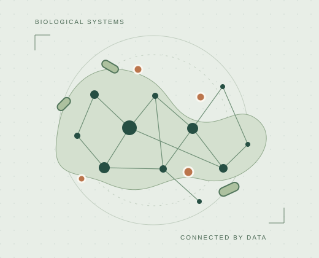

Research
Connecting diet, microbes,
and host biology.
Research at the intersection of nutritional science, experimental models, and computational approaches.

The connecting thread
From biological questions to interpretable evidence.
I study how dietary bioactive compounds and fiber interact with the gut microbiome and host biology, with interests in metabolic health, cognitive resilience, and multi-omics approaches.
The illustration is conceptual and does not represent experimental results.
The diet–microbiome connection
How do dietary exposures shape microbial communities and their functions?
My doctoral research examines how dietary bioactive compounds and fiber shape the gut microbiome and host metabolic health. I am interested in mechanistic pathways that connect diet, host genes, and microbial activity, and in why responses to nutritional interventions vary between individuals.
Approaches & context
[Add specific dissertation studies, microbial profiling methods, and confirmed outputs.]
Connecting mechanisms to disease
How can disease models clarify interactions between diet, microbes, and the host?
My research experience includes intestinal epithelial model development, cholesterol and lipid metabolomics in murine samples, and C. elegans studies of lipid metabolism and muscular longevity. These systems provide complementary ways to investigate how nutritional exposures relate to cellular function and biological mechanisms.
Approaches & context
[Confirm the current status and specific contribution to the intestinal model project.]
Finding patterns across biological scales
How can integrated biological data support interpretable, reproducible models?
A project described in my 2026 research materials asks whether fecal microbiome markers can predict cognitive resilience to sleep deprivation. The planned work brings together microbiome sequencing, neurobehavioral measures, physiology, and transcriptomic data. My broader interests include machine learning, interpretable models, and integration across omics data types.
Approaches & context
Project aims and planned data integration are documented; specific algorithms, performance, and findings are not yet listed.
Explore the work in context.
Read project summaries and the academic CV.